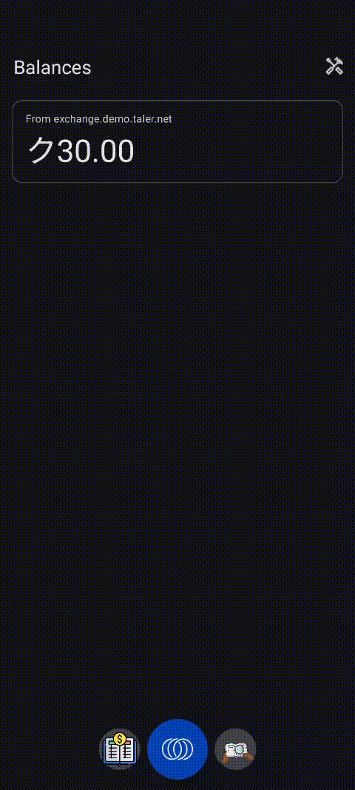

User Guide
About
Orali Money is a collaboration between GNU Taler and My Oral Village to create a mobile wallet that empowers people traditionally excluded from financial systems.
This repository is responsible for the Android version of Orali Money which has two interfaces: a standard interface adopted from Taler and an interface built on OIM (Oral Information Management) principles, allowing for illiterate and innumerate adults to interact with the application.
Installation
For non developers
- x86_64 (for Windows emulation)
- arm64 (for native Android phones (Android 8+) or MacOS emulation)
- armeabi/x86 (for deprecated Android phones; this is rarely needed)
The OIM mode for Android is still in pre-release, therefore there is no official signed release on FDroid/Play store/Nightly as of now. Since full apk optimizations are not run for debugs, the APK sizes are on the larger side (around 40mb).
Features
- Sending Money
- Receiving Money
- Transaction History (Column)
- Transaction History (River)
Demos
Generating a Transaction QR

Receiving a Transaction QR

Transaction History (River View)

Transaction History (Column View)

Design Rationale
The River View and Metaphor Driven Visualization
The river view is one of the most distinctive features of OIM. It comes from extensive research performed by our partners in Sierra Leone who studied how individuals with lower levels of literacy or numeracy understand money. Traditional interfaces filled with numbers, charts, or lists create unnecessary barriers. Highly visual metaphors remove those barriers.
Why a River
Money behaves like something that moves, divides, or accumulates. A river already communicates this naturally. It lets users understand financial activity by drawing on everyday environmental knowledge.
- A river can gain water.
- It can lose water to streams or branches.
- It can form pools or lakes.
- It changes shape over time.
This makes the metaphor powerful and easy to grasp.
Farms as Incoming Money
Incoming transactions are represented as farms. Farms are associated with growth, harvest, and gain. When money arrives, the landscape grows, and the user receives something valuable. This framing helps users understand positive inflow without requiring them to read numerical labels.
- farm size scales with transaction amount
- placement shows when the transaction occurred
- tapping opens the exact transaction
Lakes as Outgoing Money
Outgoing amounts create lakes. A lake is formed by water leaving the main river and gathering elsewhere. This mirrors the idea of money being sent away.
- lake size grows with the transaction
- the shape and placement match the timeline
- each lake opens its corresponding transaction
Visual Interaction
To support different literacy levels, the river view avoids textual dates. Instead, symbolic date markers appear above each item so users can see approximate timing without needing to read. Every element on the river can be tapped so the visual metaphor stays connected to real financial data. This ensures that the visual storytelling always reflects actual transaction history.
Landscape Only Layout
OIM does not support portrait mode, and this is intentional. The river metaphor needs horizontal space to breathe. On narrow portrait screens, the metaphor collapses and the UI becomes cramped.
Why Landscape Is Necessary
- Farms, lakes, and the river require width for clear spacing.
- A horizontal layout offers long uninterrupted movement.
- Tap areas stay large and easy for users to hit.
- The banknote stacks and money related visuals remain readable.
- Layouts look consistent across cheap and expensive phones.
Because everything in the app is designed around spatial storytelling, portrait mode would break the core experience.
Switching Behavior
The main wallet app remains in portrait. Only when the user enters OIM does the device rotate into landscape. Leaving OIM returns the device to portrait. This separation keeps the main app simple while giving OIM the space it needs.
Visual Choices and Currency Representation
Some UI decisions came directly from partner research in Sierra Leone. These choices reflect what users in the region already understand.
Partner Driven Design
Partners provided representations for:
- common note combinations such as forty being shown as twenty stacked on twenty
- how values should be grouped visually
- how amounts should scale
- how certain payment concepts should be represented
These decisions came from observing real user behavior in the field.
Why TESTKUDOS Uses SLE Notes
No assets were supplied for TESTKUDOS. Using generic placeholders would confuse users and break the visual language. SLE notes already fit the user’s mental model and the app’s visual structure. Reusing SLE notes created a consistent experience without introducing noise or ambiguity.
Reserved Space in the Send QR Screen
Several screens in the Send flow, especially the QR screen, appear to have unused space on one side. This is intentional and directly tied to how the notes column behaves during the send process. When users add multiple notes or mix denominations, the vertical stack can grow quite tall or expand horizontally during animations. Older devices with smaller landscape resolutions (such as Tecno, Itel, or older Samsung models) are especially sensitive to layout compression. If the QR code or other UI elements occupied this region, the growing notes column would begin to overlap the QR code, reduce readability, and make certain buttons difficult to tap. The reserved space ensures the layout remains stable for all device classes, prevents clipping during animations, and guarantees that even very large note stacks never interfere with essential UI interactions.